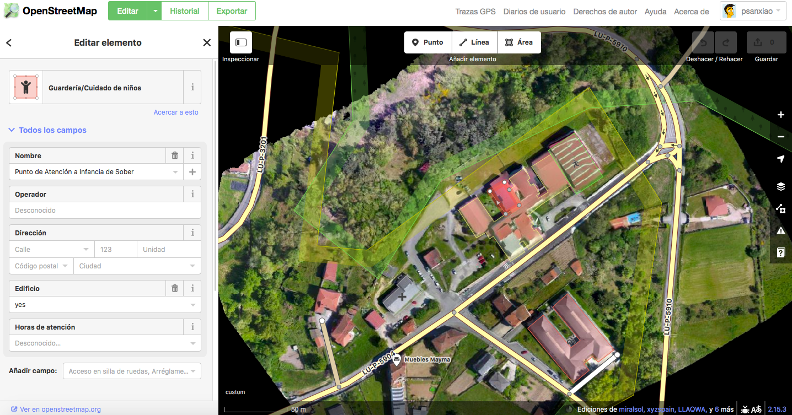
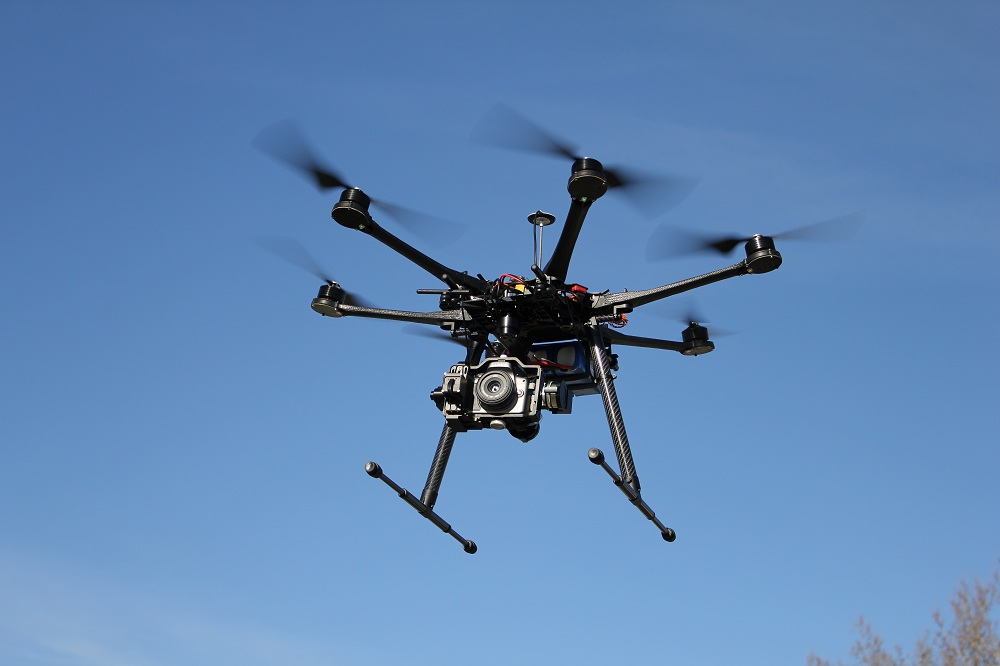
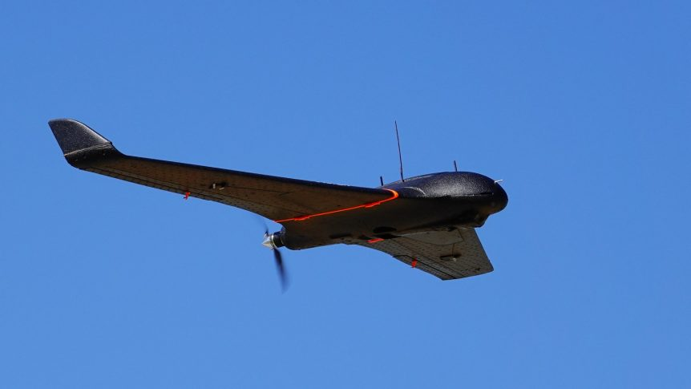
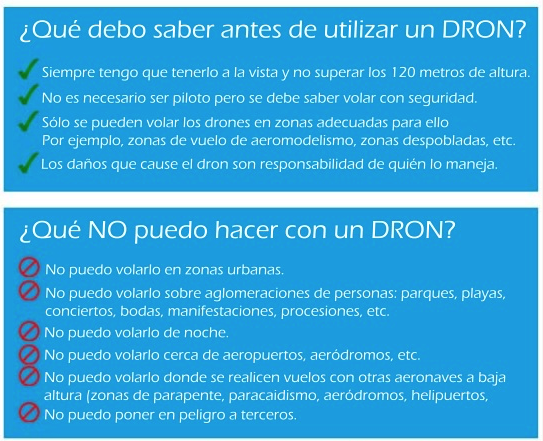
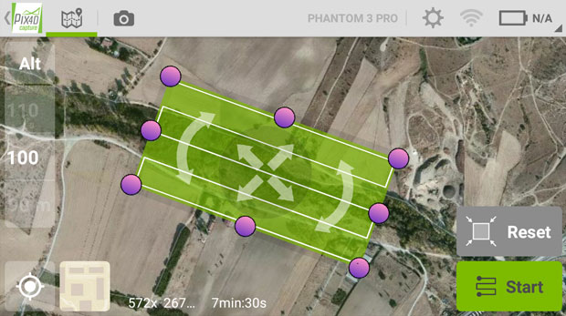
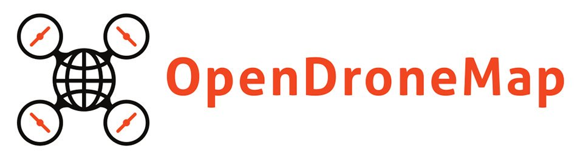
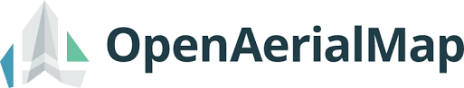
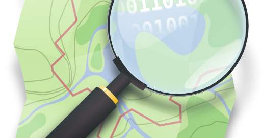

class: center, middle # Cartografía Colaborativa con Drones --- class: center, middle  --- class: center, middle # Be open [OpenDroneMap](http://opendronemap.org)| [OpenAerialMap](http://openaerialmap.org)| [OpenStreetMap](http://osm.org) --- # Qué es una ortofoto? La ortofotografía es la presentación fotográfica de una zona de la superficie terrestre, en la que todos los elementos están en la misma escala, libre de errores y deformaciones, con la misma validez de un plano cartográfico. Fuente: [Wikipedia](https://es.wikipedia.org/wiki/Ortofotograf%C3%ADa) **Una ortofo tiene lo bueno de una foto área y de un plano** Tradicionalmente se toman a través de satélites o aviones pero... ahora tenemos drones! En España tenemos el [Plan Nacional de Ortofotografía Aérea](https://pnoa.ign.es) (PNOA) --- # Tipos de Drones * multirotor * ala fija   --- # Dónde volar * [Documentación](https://www.enaire.es/servicios/drones) * [Mapa](https://drones.enaire.es)  --- # Qué necesitamos? * 1 drone * 1 app para preparar misiones - [Pix4D](https://www.pix4d.com/product/pix4dcapture) - [DroneDeploy](https://www.dronedeploy.com/product/mobile/) - [MissionMaker for ArduPilot](https://play.google.com/store/apps/details?id=org.aerohawk.android&hl=es) * Que el tiempo acompañe... **[Algunos tips](https://support.dronedeploy.com/docs/making-successful-maps)**  ---  Requisitos previos: * git * Docker **Instalación** $ git clone https://github.com/OpenDroneMap/WebODM.git $ ./webodm.sh start **Usar como Live USB** $ git clone https://github.com/OpenDroneMap/LiveODM.git $ ./envsetup.sh (Para generar la ISO) **Documentación** * [Manual](https://www.opendronemap.org/docs/) * [ODM Book](https://odmbook.com) **[Datasets para jugar](http://www.ghandalf.org/drones/)** --- **Algunos comandos interesantes**: Reiniciar WebODM $ ./webodm.sh restart Resetear contraseña administrador $ ./webodm.sh resetadminpassword newpass Cambiar el puerto $ ./webodm.sh restart --port 80 Actualizar a la última versión $ ./webodm.sh update ---  Set de herramientas para compartir imagenes por satélite y procedentes de vuelos con drones, a través de una licencia libre (CC-BY 4.0). Impulsado por el equipo humanitario de OSM en colaboración con otras entidades. * [Mapa](http://map.openaerialmap.org/#/) * [Algunos vuelos para probar](https://map.openaerialmap.org/#/-5.712890625,44.96479793033101,3/user/5d1ce0d193e1130005fc0eb4?_k=nkf86f) ---  **[OpenStreetMap](http://osm.org)** **[Qué es OpenStreetMap?](http://psanxiao.com/osm-slides/2016-jornadas-cartografia-participativa.html#/13)** **Recursos** * [MapFeatures](https://wiki.openstreetmap.org/wiki/Map_Features) * [Tutoriales](https://learnosm.org/es/)